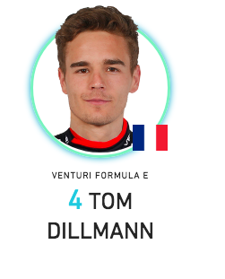

As well as racing in the FIA Formula E Championship, Venturi is also an electric land-speed record-breaking constructor.Based in Monaco, the team can trace its racing history back to a brief stint in Formula 1 in 1992.Stephane Sarrazin has been part of the team since the start of the championship and has scored the vast majority of the team’s points and its only pole and one of its two top-three finishes.For season three he has been joined by Maro Engel, who got off the mark right away with points on his debut.
About the racer in this car.
1.MARCO ENGEL
Intresting Fact
Engel is a member of the 'Champions for Peace' club, a group of 80 famous elite athletes committed to serving peace in the world through sport?
BIOGRAPHY
Maro Engel made an instant impression in Formula E, scoring a point on his debut for Venturi.He's enjoyed a rich and varied career that started in the conventional way with junior single seater categories such as Formula BMW and Formula 3, but then took him to the DTM, V8 Supercars in Australia and back to Europe for the Blancpain GT series.He's part of Mercedes factory GT programme and in 2016 won the prestigious Nurburgring 24 for the German marque.
Points & Results.
Points : 16
Poles : 0
Front Rows : 0
Fastest Laps :2
Raced Laps :296
Led Races :0
Led Laps : 0
Led Km : 0
2.SEBASTIEN BUEMI

Intresting Fact
Haa... Dillmann started his career by winning a soapbox championship in the Alsace region of France
BIOGRAPHY
The defending Formula V8 3.5 Champion is making a one-off appearance in the all-electric racing series, standing in for Maro Engel, who has a clashing DTM commitment.Dillmann has driver Venturi's VM200-FE-02 before, having taken part in the shakedown for the team in Mexico City.Along with his success in V8 3.5, Dillmann is a race-winner in GP2 and the Formula 3 Euroseries, where he was once a part of the Red Bull junior team.
Points & Results.
Points : 10
Poles : 0
Front Rows : 0
Fastest Laps :0
Raced Laps :231
Led Races :0
Led Laps : 0
Led Km : 0